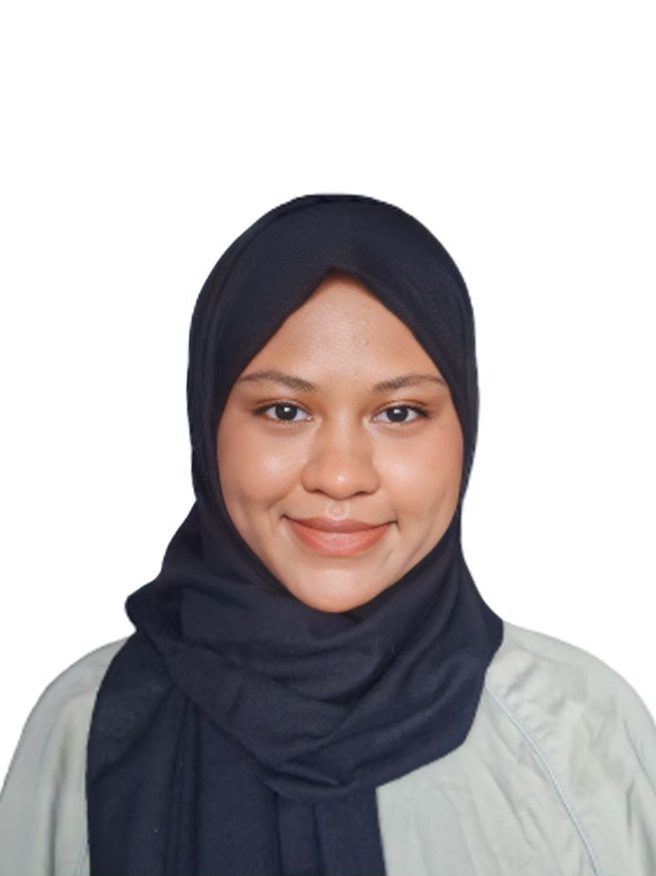
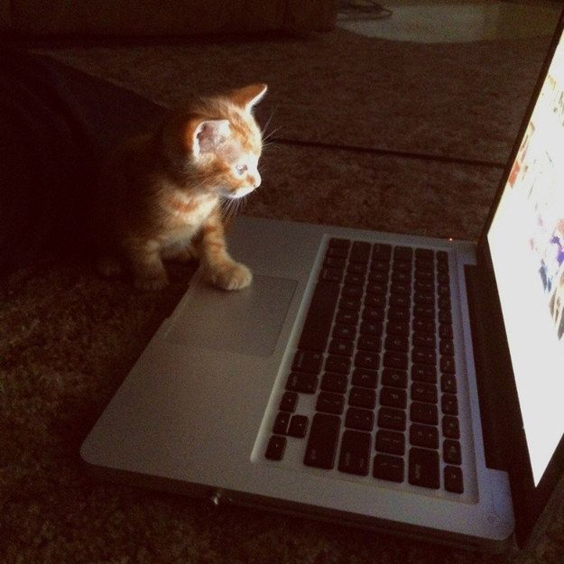
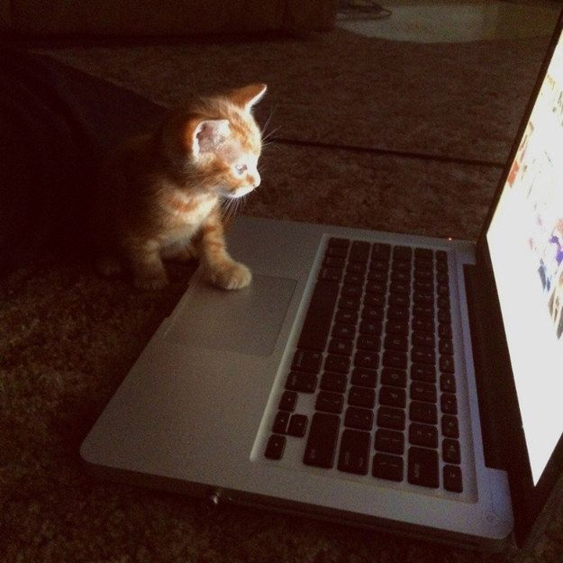
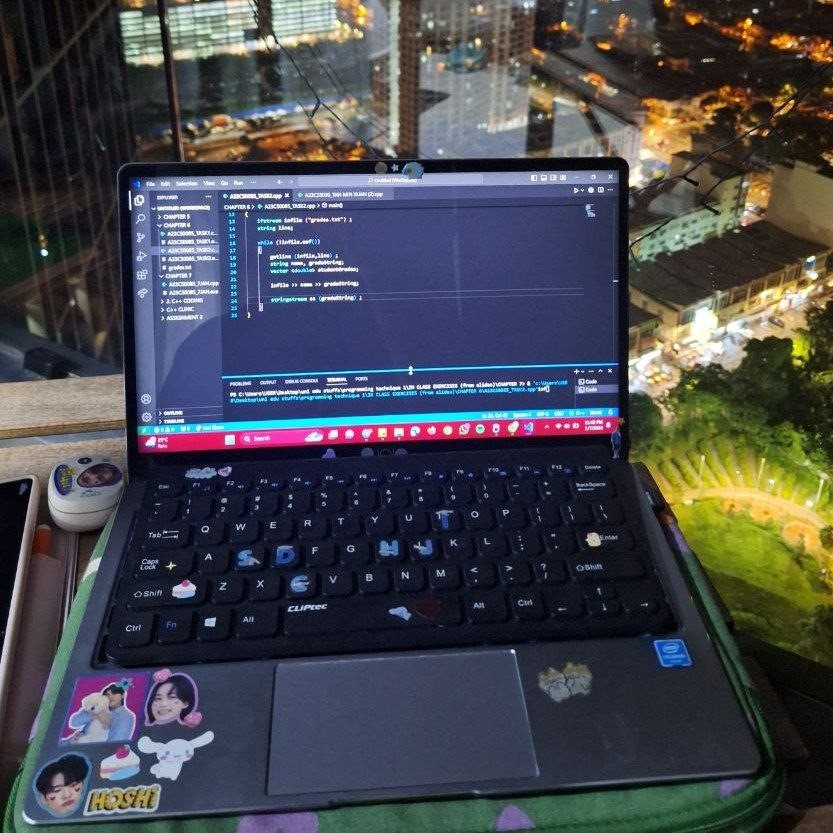

E-PORTFOLIO.
I am an undergraduate student at Universiti Teknologi Malaysia, taking Computer Science course in Software Engineering.
=========================
PROFILE

My name is Intan Serina binti Anuar Mus, a passionate and driven 20-year-old student at Universiti Teknologi Malaysia. My curiosity and desire to learn constantly push me to explore new challenges and develop my skills.
Education
Interests
Outside of academics, I enjoy reading, watching movies and listening to musics. I also enjoy coding during my free time.
 


Leadership & Service
=========================
ASSIGNMENTS SUBMISSION

Assignment 1
Title : Report on Visit to NALI 2023
Click below to access the file.Assignment 2
Title : Poster on Industrial Talk 1
Click below to access the file.Assignment 3
Title : Video on Visit to UTM Digital and the Attended Virtual Talk
Click below to access the file.Assignment 4
Title : Report on Industrial Talk 2(a)
Click below to access the file.Project
Title : Design Thinking Project)
Click below to access the file.Design Thinking Project Submission File
=========================
REFLECTIONS
ASSIGNMENT 1
These kinds of programs definitely help the students, because they share new and detailed knowledge with us, as it can also be practiced in our daily lives. There are a few other booths that I visited that explained about topics related to how augmented reality (AR) can be used in class, to give students a whole new experience of learning. Other than that, some other booths shared how applications like KAHOOT! and Quizizz can be used to create quizzes, as well as make your own studying materials like flashcards and interact with other students around the world. These activities do impact the outcomes of the course and subjects because now students know other fun ways to learn and study instead of using conventional and boring ways. I feel like my visit to NALI 2023 helped me to learn something impactful and learn new things for my course materials that I never knew before, because of the detailed explanations from the presenters. All of the presenters were approachable and very enthusiastic in explaining and answering my questions about their booths. The activities do give sparks to the students because of the well-structured and colorful posters, which made it easy for us to learn about the new things that are relevant to our lives.
ASSIGNMENT 2
This career talk revealed to us that jobs in Information Communication Technology are essential for industries as it will results in improving innovation, efficiency enhancement, and economic growth. For instance, the newly developed technologies contribute to improving people’s life will lead to global connectivity where industries can expand their markets and collaborate with others. From the career talk, we learned that Information Communication Technology (ICT) is a vast industry. If we need to engage in an ICT-relevant job, personality traits play a huge role. As a student who is going to get involved in the ICT-relevant sector, it is a must to be a self-learner. This is because technology keeps changing rapidly and to stay up-to-date on technology trends, we need to develop new technologies by taking extra courses, doing research and so on. From the career talk, we also learned that there is a huge difference between work life and university life. During work life, we need to be responsible for every action that we do as it will have a huge effect on our colleagues. Overall, the talk gives a bunch of benefits for students where students can get a deeper understanding and information about the working requirements they need in the future.
ASSIGNMENT 3
In conclusion, our visit to UTMDigital really sparked our fascination with the amazing capabilities of this technology and left us feeling impressed with how the technology works and the amazing people behind it that made sure they worked properly for the convenience of UTM community. It really gives us a transformative experience outside the textbook learning. This activity does give benefits to the students because it is an invaluable learning experience we cannot get anywhere. Other than that, these activities can give impacts to the outcome of our course and subject because it gets to enrich the learning experience, providing context and relevance to the course material. These activities for sure gave impact to the students because witnessing the cutting-edge technology and the dedicated work of the professionals sparked a collective curiosity within us, to dive deeper into the world of tech and explore its potential. The visit to the data center really left us in awe. The talk and interactions with the experts and engineers also offered unique insights for us that were beyond the syllabus, which helped to broaden our perspective and encourage us to think critically about how these technologies are working 24/7 to provide the necessities for the society. Last but not least, this valuable opportunity will undoubtedly leave a lasting impact in our academic journey and future career aspirations.
ASSIGNMENT 4
From the insightful talk, I've gained a newfound understanding of system development's collaborative nature involving clients and developers. It's motivated me to pursue a strong academic foundation in computer science and engage in coding projects for hands-on experience. Attending workshops will keep me updated on tech trends. I aim to not only master technical skills but also develop essential soft skills like communication. The talk emphasized the importance of continuous learning in this dynamic field, fueling my goal to be a proficient and adaptable system developer.
DESIGN THINKING PROJECT
In regard to Technology and Information Systems, my goal is to establish a lifelong learning habit in this field, staying updated to the latest trends because the IT field is always changing and elevating. Therefore, to achieve that, I will try my best to deepen my knowledge and stay enthusiastic in learning new things by involving myself in a lot of projects. These can let me leverage my knowledge to develop a solution for local social issues in this world. In my opinion, this design thinking project has helped to think outside the box and awakening my creativity in order to solve real-life problems. This project also allows and requires me to do a deeper thinking and planning of the solutions step-by-step as well as having effective communications between the group members. Generally speaking, this project has broadened my intellectual horizons in this course and exposed me to continuous learning and improvement in order to get the best solutions. I believe that staying consistent in this industry is quite important in order for me to improve my potential. It is well known that this industry is rapidly changing everyday as time goes by. Therefore, continuous learning will always be my significant way because it is crucial to stay relevant and get provided with up-to-date solutions. I will also enrich my knowledge in this field by gaining experiences from projects, attending seminars and doing self-learning as much as I can to gain more skills, as well as improving myself from the constructive feedback I receive from other people in this field.